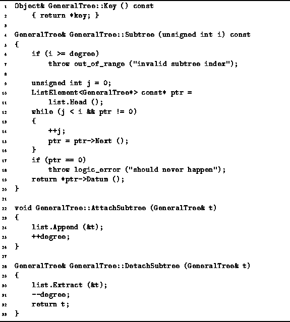

Data Structures and Algorithms
with Object-Oriented Design Patterns in C++
Data Structures and Algorithms
with Object-Oriented Design Patterns in C++
Program  defines the various GeneralTree class
member functions for manipulating general trees.
The Key member function is a member variable accessor
that simply returns a reference
to the object contained by the root node of the tree.
Clearly, its running time is O(1).
defines the various GeneralTree class
member functions for manipulating general trees.
The Key member function is a member variable accessor
that simply returns a reference
to the object contained by the root node of the tree.
Clearly, its running time is O(1).

Program: GeneralTree Class Key, Subtree, AttachSubtreeand DetachSubtree Member Function Definitions
The Subtree member function takes as its lone argument
an unsigned int, i,
which must be between 0 and  ,
where degree is the degree of the root node of the tree.
It returns a reference to the
,
where degree is the degree of the root node of the tree.
It returns a reference to the  subtree of the given tree.
The Subtree routine simply takes i steps down the linked list
and returns a reference to the appropriate subtree.
Assuming that i is valid,
the worst case running time for Subtree is O(d),
where
subtree of the given tree.
The Subtree routine simply takes i steps down the linked list
and returns a reference to the appropriate subtree.
Assuming that i is valid,
the worst case running time for Subtree is O(d),
where  is the degree of the root node of the tree.
is the degree of the root node of the tree.
 Copyright © 1997 by Bruno R. Preiss, P.Eng. All rights reserved.
Copyright © 1997 by Bruno R. Preiss, P.Eng. All rights reserved.